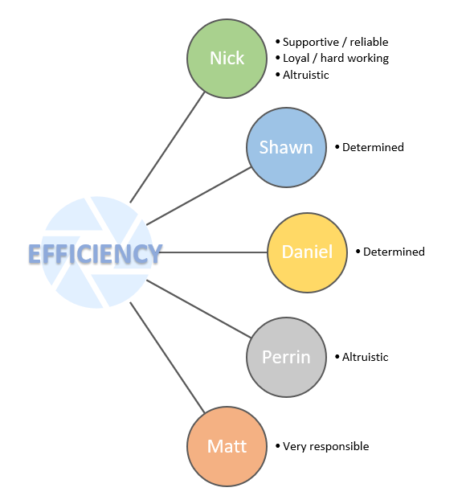
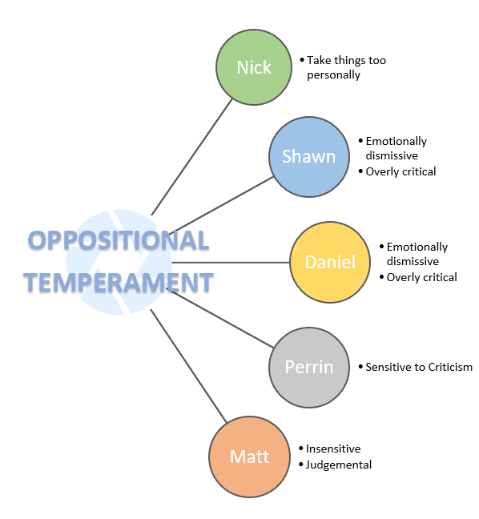

Test Results
Nick - Defender
- Supportive/Reliable
- Enthusiastic
- Modest/Shy
- Overload themselves
|
- Patient
- Loyal/Hardworking
- Take things personally
- Reluctant to change
|
- Imaginative/Observant
- Practical
- Repressive
- Too altruistic
|
https://s3913624.github.io/COSC2196Assignment1/PersonalityProfile.html
Shawn - Architect
- Rational
- Determined
- Arrogant
- Potentially Combative
|
- Informed
- Curious
- Emotionally dismissive
|
- Independent
- Versatile
- Overly Critical
|
https://shawnchristopherr.github.io/A1final/Pagetwo.html
Perrin - Turbulent Advocate
- Creative
- Passionate
- Reluctant to open up
- Prone to burnout
|
- Insightful
- Altruistic
- Perfectionist
|
- Principled
- Sensitive to criticism
- Avoiding the Ordinary
|
https://perrinwardle.github.io/Assignment-1/personality.html
Daniel - Architect
- Rational
- Determined
- Arrogant
- Potentially Combative
|
- Informed
- Curious
- Emotionally dismissive
|
- Independent
- Versatile
- Overly Critical
|
https://revanvakaian.github.io/Assignment-1-mkII/
Mat - Logistician
- Honest and Direct
- Calm and Practical
- Stubborn
- Judgemental
|
- Strong-Willed / Dutiful
- Create and enforce order
- Insensitive
- Often unreasonably blame themselves
|
- Very responsible
- Jack-of-all Trades
- Always by the book
|
https://herpmaderp.github.io/MatPhillips/
Investigation
Between Assignment 2 and now, the group remains convinced that we are all individuals and that the results of personality tests or learning profiles should not necessarily be considered the be-all and end-all for establishing a group in the first place. Despite this, each and every one of us had previously agreed with some aspects of our individual results, and we were able to successfully predict aspects of the group dynamic during Assignment 2 and 3.
The most noticeable common denominator was that each of us appeared to be hard-working and responsible in some form or another. Based on the result of Assignment 2, this proved to be absolutely true. We commented that this work ethic was a factor held in high regard when forming a group, as a group project will likely delay when individuals cannot take up the mantle to do things when things need doing, and we stand by this argument entirely.
The group proved to have some altruistic team members which did indeed benefit the group. Because of our awareness of these altruistic members, we managed to predict when one might be becoming overloaded, and it was our calmer, more rational team members that stood up, noticed help was required and were able to mitigate individual burnout and team conflict. In doing so, there were no delays as everyone in the team did not take on more than they could handle.
It was mentioned in Assignment 2 that there were several personalities that could have been considered a source of potential conflict within the group. According to the results there were some critical and dismissive personalities that could have opposed others with more sensitive personalities. It was mentioned that these personalities could have been offset by our single team member with the least common attributes to the group. The principled, insightful, and passionate member of the team with the potential to think outside the box and see things from another perspective. As it turned out, everyone was principled, insightful, and passionate, and everyone was prepared to stand up for each other for the greater good of the team. Ultimately though, there was no need to be concerned. There were no conflicts throughout our work together.
How prevalent a personality attribute is to each individual has become clearer as we’ve worked together over the weeks. To begin with, there was no clear indication of how severe a personality attribute was. i.e., exactly how hard-working or responsible is the individual? Exactly how critical and dismissive are we talking? It was this aspect that the profile tests failed to recognise, which made predicting our group dynamic with any accurate credibility impossible. It was mentioned in Assignment 2 that we were very interested to see how the dynamic evolved over time based on our pre-understanding of each other. It is safe to say that each of us were surprised with some of the consistencies between our personality results and our personalities. We are no longer so dismissive of what some of us, perhaps unfairly, called “pseudoscience”.
Summary Diagrams
|  |
 |
 |